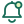

Tu comunidad, de un vistazo.
Una familia de trazos redondeados en verde y lima, con símbolos y textos que se reconocen juntos.
InicioTu comunidad
TablónLo que pasa cerca
CompraventaObjetos entre vecinos
TrayectosIr juntos
AnimalesPerdidos y encontrados
MensajesConversaciones privadas
Mi cuentaTu perfil
Ayuda y serviciosUna mano cerca de ti
ACCIONES Y ESPACIOS DE LA COMUNIDAD

NotificacionesBuscar
Comunidades
Avisos oficiales
Papelera
SVG escalables · Trazo de 1,8 · Verde #176B57 · Lima #E3F3BF · Los textos acompañan siempre a los iconos.